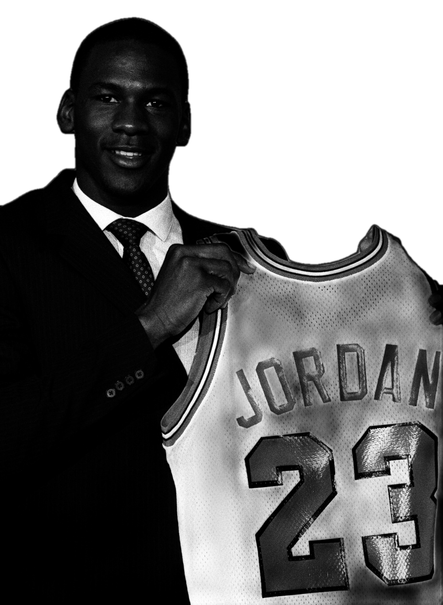
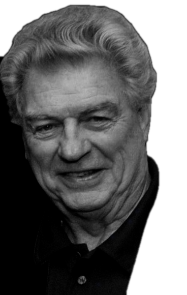
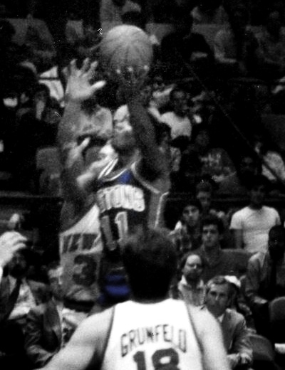

PONTIAC SILVERDOME
FOTO: KEN LUND · CC BY-SA 2.0 (MODIFICADA)
ABRIL
3
1988

M. JORDAN
CHICAGO
FOTO: UPI · DOMINIO PÚBLICO
PUNTOS
3 ABRIL 1988 · PONTIAC SILVERDOME
BULLS 112 · PISTONS 110

CHUCK DALY
DETROIT
2006
FOTO: CHAD J. McNEELEY, U.S. NAVY DOMINIO PÚBLICO
1
2
3
RECREACIÓN · DALY NUNCA PUBLICÓ LAS REGLAS
PIZARRA: RECREACIÓN

DETROIT · 1985
FOTO: RICKDIKEMAN · CC0
DETROIT ELIMINA A CHICAGO EN LOS PLAYOFFS
4-1 · 4-2 · 4-3
Fotos: UPI (dominio público), Chad J. McNeeley, U.S. Navy (dominio público), RickDikeman (CC0), Ken Lund (CC BY-SA 2.0), modificadas, vía Wikimedia Commons. Libreta y pizarra: recreación.